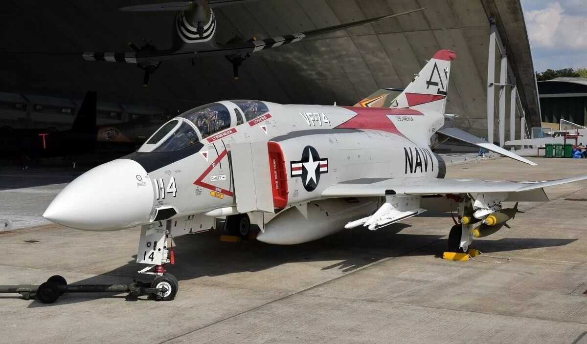
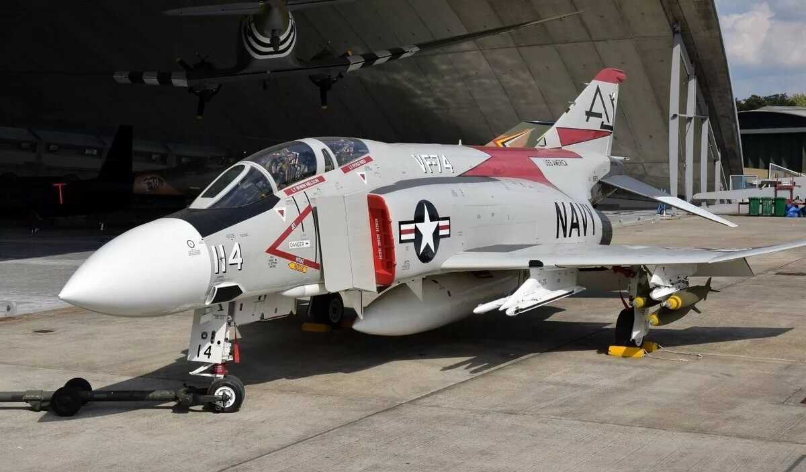

F-4 Fantom 2
McDonnell Douglas F-4 Phantom II (Макдоннел-Дуглас Ф-4 «Фантом-2») — двухместный, дальнего радиуса действия истребитель-перехватчик, истребитель-бомбардировщик (по позднейшей классификации — тактический истребитель) третьего поколения.
Начиная с 1959 года установил 15 мировых рекордов лётных характеристик, в том числе высоты (динамический потолок) 30 тысяч м и скорости полёта. Подобно другим истребителям своего поколения F-4 не имел пушечного вооружения, встроенная 20-мм пушка «Вулкан» появилась на модификации F-4E в годы вьетнамской войны.
Находился в производстве с 1958 по 1981 год, всего было построено 5195 машин, и таким образом является наиболее массовым сверхзвуковым самолётом США. Первый в мире серийный истребитель, несущий ракеты «воздух-воздух» среднего радиуса действия.
Самолёт был разработан по заданию Военно-морских сил США, в основном, с целью защиты кораблей и предназначался для замены устаревшего F-3 Demon. Кроме того, на него возлагалась задача по перехвату советских стратегических бомбардировщиков. Но когда F-4 показал скорость, большую, чем у F-104 Starfighter, находившегося в то время на вооружении ВВС США, последние также проявили к этой машине самый живой интерес и впоследствии заказали «Фантом» и для себя.
На F-4 был реализован ряд новаторских решений, включая импульсно-допплеровскую РЛС, новейшее БРЭО и широкое применение в конструкции титановых сплавов — 8,5 % массы конструкции (или 570 кг на машину) на модификациях F-4J/E. Он первым среди американских машин был способен без помощи наземной станции наведения находить и поражать цели, находящиеся за пределами визуального контакта.
Поначалу F-4 использовался ВМС США как перехватчик, но вскоре, во Вьетнаме, он поступил на вооружение Корпуса морской пехоты в качестве самолёта наземной поддержки. Гибкость конструкции сделала его первым типом самолёта среди американских машин, который использовался одновременно ВВС США, Военно-морскими силами и Корпусом морской пехоты. «Фантом» преуспел в качестве самолёта воздушного превосходства, перехватчика, самолёта наземной поддержки, самолёта ПВО, ударного самолёта дальнего радиуса действия, самолёта для обороны флота и разведчика.
На F-4 было установлено несколько мировых рекордов, таких как рекорд высоты полёта в 30040 метров (6 декабря 1959 года), рекорд скорости — 2585,425 км/час (22 ноября 1961 года) и рекорд скорости на малой высоте — 1452 км/час, который продержался в течение шестнадцати лет.
Обладая способностью легко достигать скорость, в два раза превышающую скорость звука, «Фантом» был довольно сложной в пилотировании машиной, в значительной мере из-за плохих штопорных характеристик.
«Фантом» находился в производстве с 1958 по 1979 годы и всего было построено 5195 машин. 5057 из них были изготовлены в Сент-Луисе в штате Миссури в США и ещё 138 построили по лицензии на заводах Mitsubishi в Японии. Пик производства F-4 пришёлся на 1967 год, когда завод компании МакДоннелл выпускал 72 самолёта в месяц. Американские ВВС имели на вооружении 2874 Фантомов, в то время как ВМС и Корпус морской пехоты — 1264 машины.
Постоянно дорабатываясь и обновляясь, «Фантомы» несли службу в ВВС одиннадцати стран: Австралии, Великобритании, Германии, Греции, Египта, Израиля, Ирана, Испании, Турции, Южной Кореи и Японии. В Великобритании «Фантомы» несли службу одновременно в ВВС и в Военно-морских силах, начиная с 1968 года и последний самолёт был списан в январе 1992 года. В США Фантом ушёл из активной службы в 1996 году. К этому времени самолёты этого типа налетали более 2735000 километров. В 1998 году, когда отмечалось его сорокалетие, «Фантом» всё ещё находился на вооружении девяти стран: Германии, Греции, Египта, Израиля, Ирана, Испании, Турции, Южной Кореи, Японии; при этом все эти страны планировали провести модернизацию своих F-4, с тем, чтобы эти самолёты оставались на боевом дежурстве вплоть до 2015 года.
 
